|
|
      
|
בעמוד זה ניתן להוריד את קבצי המילון שמשמשים את המנתח הצורני שלנו. כל קבצי המילון כתובים עברית בתעתיק לטיני . הסבר כללי לגבי מבנה המילון ניתן למצוא כאן . ואלו הם קבצי המילון:
המנתח הצורני ההסתברותי התחבירי משתמש בשני קבצים נוספים:
ניתן להוריד את המילון כולו יחד עם שאר המנתח הצורני - כאן.
|
This page should be viewed using Microsoft Internet Explorer 4+, with Hebrew support. If you don't have Hebrew support, or don't read Hebrew, you can read a partial English translation here. |
|
כתובת האתר: http://www.cs.technion.ac.il/~erelsgl
להערות ותגובות: erelsgl@cs.technion.ac.il |